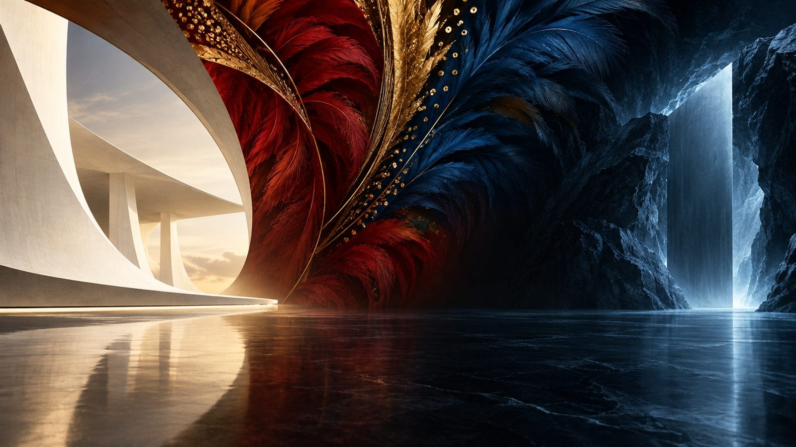
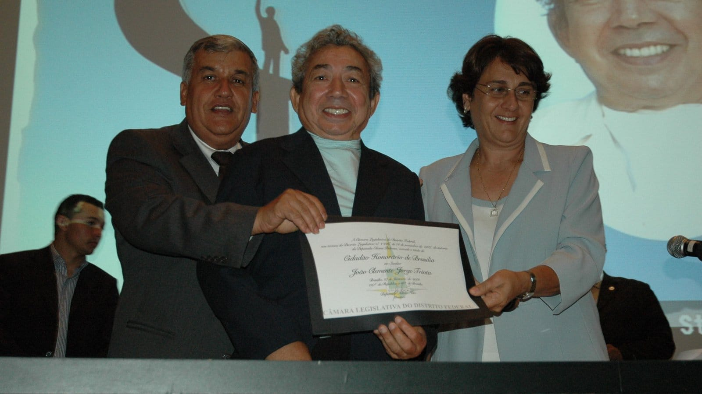

A origem
Uma amizade em Brasília virou instituição.
O Instituto nasceu de uma história construída entre a gestão pública, a amizade e o compromisso com a cultura brasileira. No centro dela está José Ricardo Marques, advogado, jornalista, cientista político, gestor público e agente cultural.
O marco
Complexo Cultural da República
Secretário de Cultura do Distrito Federal, José Ricardo Marques participou da inauguração do complexo, na Esplanada dos Ministérios. Concebido como um dos grandes símbolos culturais da capital, ele ampliou o acesso da população à arte, ao conhecimento e à memória nacional.
- Museu NacionalHonestino Guimarães
- Biblioteca NacionalLeonel de Moura Brizola
- EndereçoEsplanada dos Ministérios, Brasília
O encontro
Joãosinho veio a Brasília para se tratar. Ficou cinco anos.
Em tratamento de saúde no Hospital Sarah Kubitschek, o carnavalesco conheceu José Ricardo Marques. Da conversa nasceu uma amizade de confiança e solidariedade, e da amizade nasceu uma casa: Joãosinho foi acolhido na residência dele por cerca de cinco anos.
Foi nessa convivência que se conheceu, além do artista reconhecido no país inteiro, o homem, o pensador e o criador que entendia a cultura como expressão da identidade brasileira. Da amizade nasceu uma responsabilidade com o legado.
de convivência em Brasília, na casa de José Ricardo Marques.

A linha da amizade
- O encontroJoãosinho se trata no Hospital Sarah Kubitschek e conhece Ricardo
- A casaÉ acolhido na residência de Ricardo por cerca de cinco anos
- 21 out 2008Os dois criam juntos o Instituto Joãosinho Trinta
- 2011Joãosinho morre em São Luís, aos 78 anos
- HojeRicardo preside o Instituto e leva o legado adiante
O legado que o Instituto carrega
Criação
Imaginação aplicada à cenografia, ao espetáculo e à cultura popular.
Identidade
Valorização de símbolos, histórias e expressões que formam o Brasil.
Indústria criativa
Integração entre arte, trabalho, conhecimento e geração de valor.
Acesso
Cultura como experiência pública, coletiva e transformadora.
Quem somos
O apoio à cultura é a força que o nosso país precisa.
O Instituto Joãosinho Trinta nasceu em 21 de outubro de 2008, criado pelo próprio Joãosinho ao lado de José Ricardo Marques, que o acolheu em Brasília nos seus últimos anos. É uma Organização da Sociedade Civil de Interesse Público e, há mais de quinze anos, leva boas práticas ao setor cultural e ajuda a estruturar a economia criativa. Sob a presidência de José Ricardo Marques, reúne num mesmo trabalho memória, patrimônio, formação, produção cultural e economia criativa.

Missão
Promover boas práticas no setor cultural e ajudar a estruturar a economia criativa, transformando a sociedade pela qualidade do setor e pela qualificação de quem faz cultura.
Visão
Desenvolver a economia e a indústria criativa de forma sustentável e inclusiva, preparando o setor das artes em todas as suas vertentes, com inovação e criatividade.
Valores
Ser referência no mercado criativo, com sustentabilidade, boa governança, ética e resultados que transformam, sobretudo no desenvolvimento humano.
O Instituto cultiva
- Transparência
Recursos bem geridos e resultados públicos, para que as lições sirvam a toda a sociedade.
- Inovação e inclusão
Caminhos simples para os desafios da cultura, explicados de um jeito acessível a quem produz.
- Ética e justiça
Benefícios e responsabilidades da cultura divididos de forma justa com toda a sociedade.
- Sustentabilidade
Boas práticas que mantêm a cultura viável, na economia e na vida das pessoas.
- Dinamismo
Inquietação diante dos desafios, com novas tecnologias e pesquisa aplicada.
Economia criativa
A casa falava em economia criativa antes de virar pauta.
Quando o assunto mal aparecia nas políticas públicas, José Ricardo Marques abriu o debate sobre indústria e economia criativa no Brasil, inclusive em encontros no Teatro Municipal com a participação do então ministro da Cultura Gilberto Gil.
Cultura e trabalho
A cadeia cultural reúne criação, produção, circulação e renda.
Política pública
O poder público pode estruturar ambientes para que o talento vire oportunidade.
Desenvolvimento
Investir em cultura fortalece territórios, identidade e atividade econômica.
A cadeia produtiva da cultura
- Criação
- Produção
- Comunicação
- Tecnologia
- Circulação
- Empregos
- Território
Cultura não é só evento nem só preservação de manifestação tradicional. É uma cadeia produtiva inteira, e ela gera desenvolvimento onde chega.
Arquivo Nacional
A memória brasileira chegou ao Ártico.
Diretor-geral do Arquivo Nacional, José Ricardo Marques inaugurou a presença do Brasil no Arquivo Ártico Global, em Svalbard, no extremo norte da Noruega.
O projeto foi concebido para preservar, em condições climáticas e tecnológicas especiais, documentos digitais de grande relevância histórica para a humanidade. O Arquivo Nacional entrou no grupo inaugural de instituições depositantes, ao lado de nomes internacionais comprometidos com a proteção da memória do mundo.
Segundo a CNN, o acontecimento figurou entre os dez fatos mais importantes do mundo naquele período.
- ≈1.000km
do Polo Norte, em Svalbard, no extremo norte da Noruega.
- 1ºdepósito do Brasil
O Arquivo Nacional no grupo inaugural de instituições do Arquivo Ártico Global.
- 10fatos do mundo
A lista da CNN no período incluiu o depósito brasileiro.
Memória · Tecnologia · Futuro